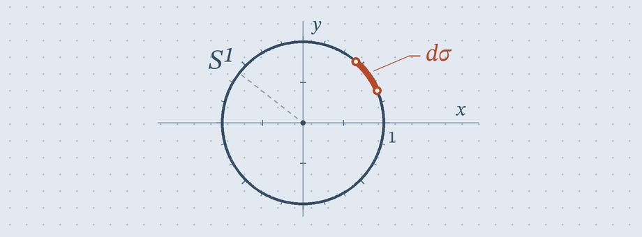
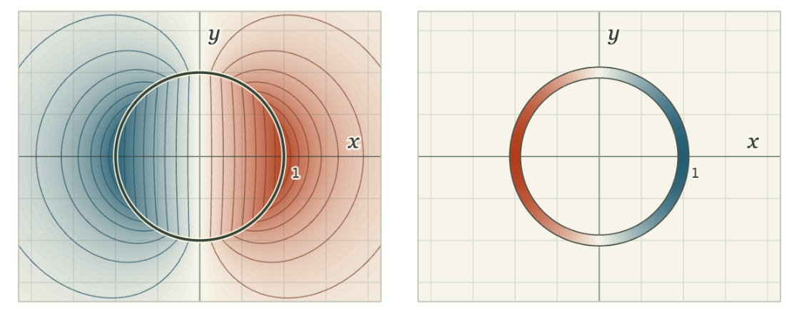
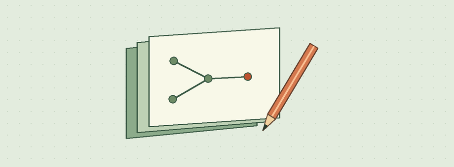

Research paperWaves on a hypersurface
How does a wave in the plane evolve when its nonlinear interaction is confined to a circle?
A personal math notebook
I’m Xilin Chen. I study partial differential equations and integrable systems at Georgetown University. I’m also interested in how LLM interpretability, and Lean Formalization.


Research paperHow does a wave in the plane evolve when its nonlinear interaction is confined to a circle?

Lean & AIA set of workflow skills for tracing a paper argument all the way to a checked Lean declaration.
 Proof playground
Proof playground
A few small Lean puzzles. Pick a tactic and watch what happens to the goal.